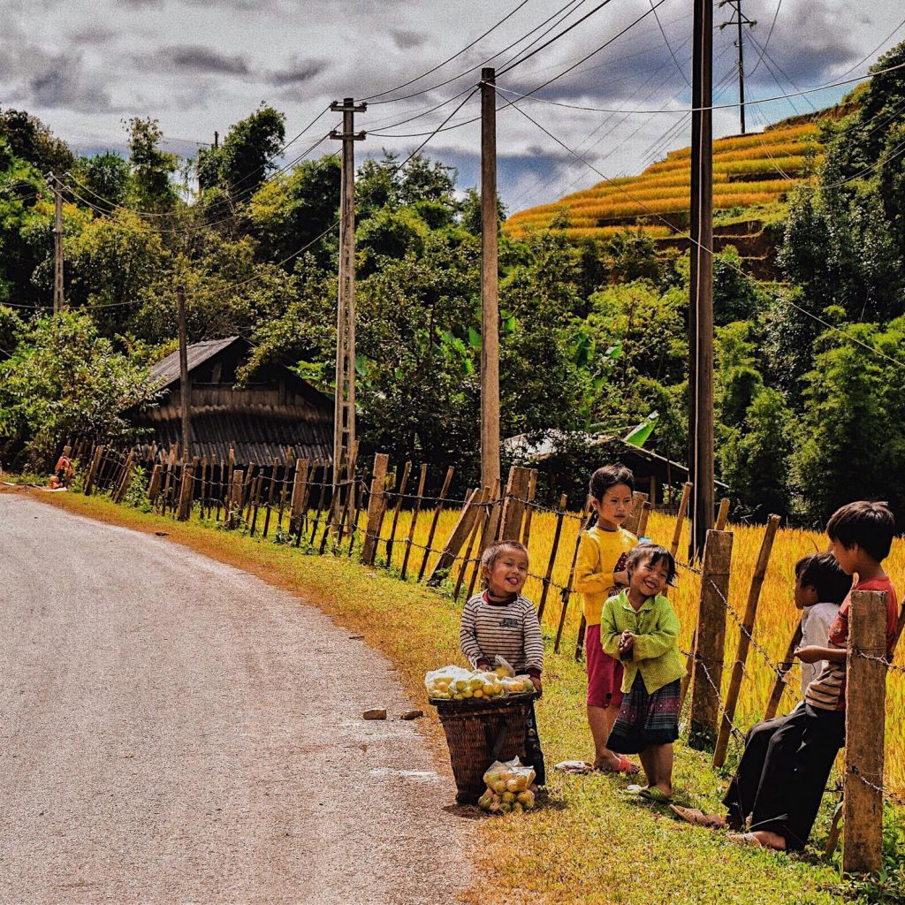
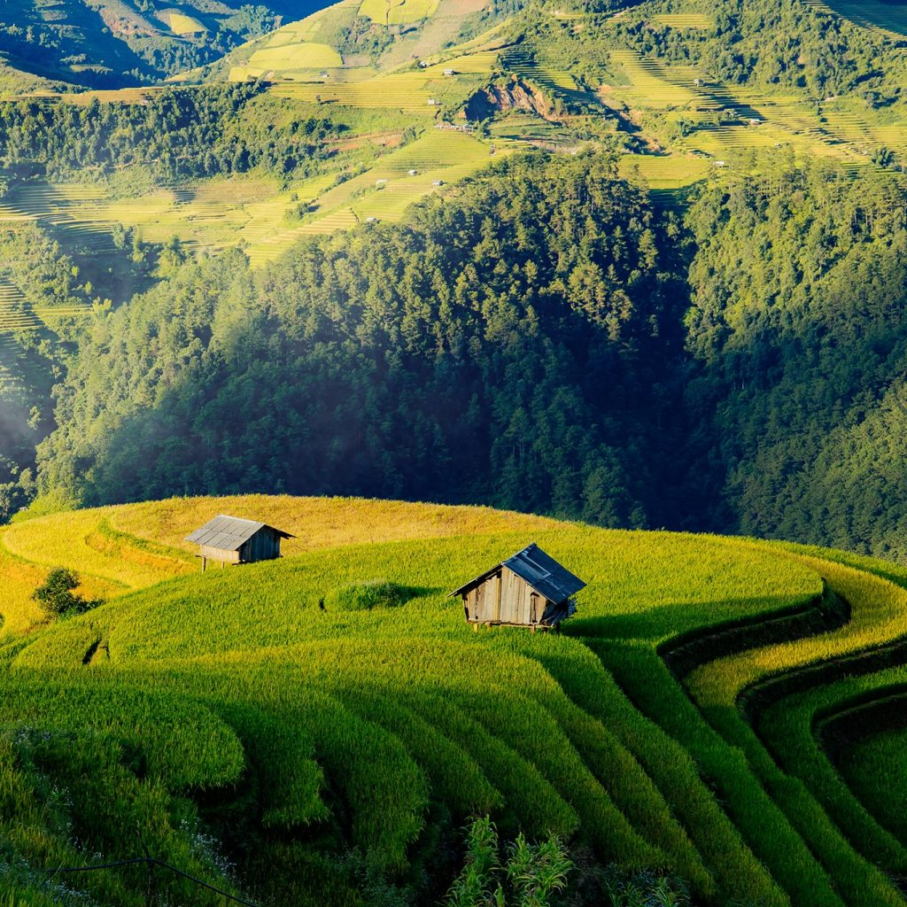
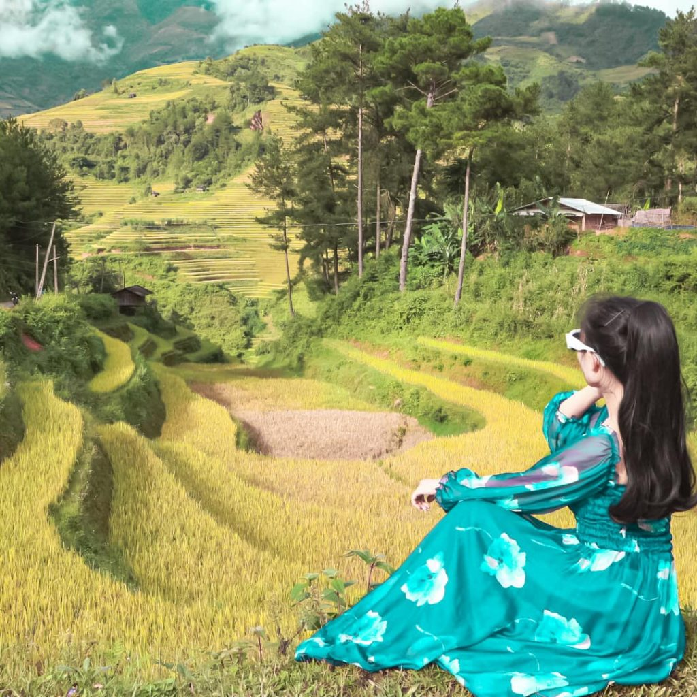
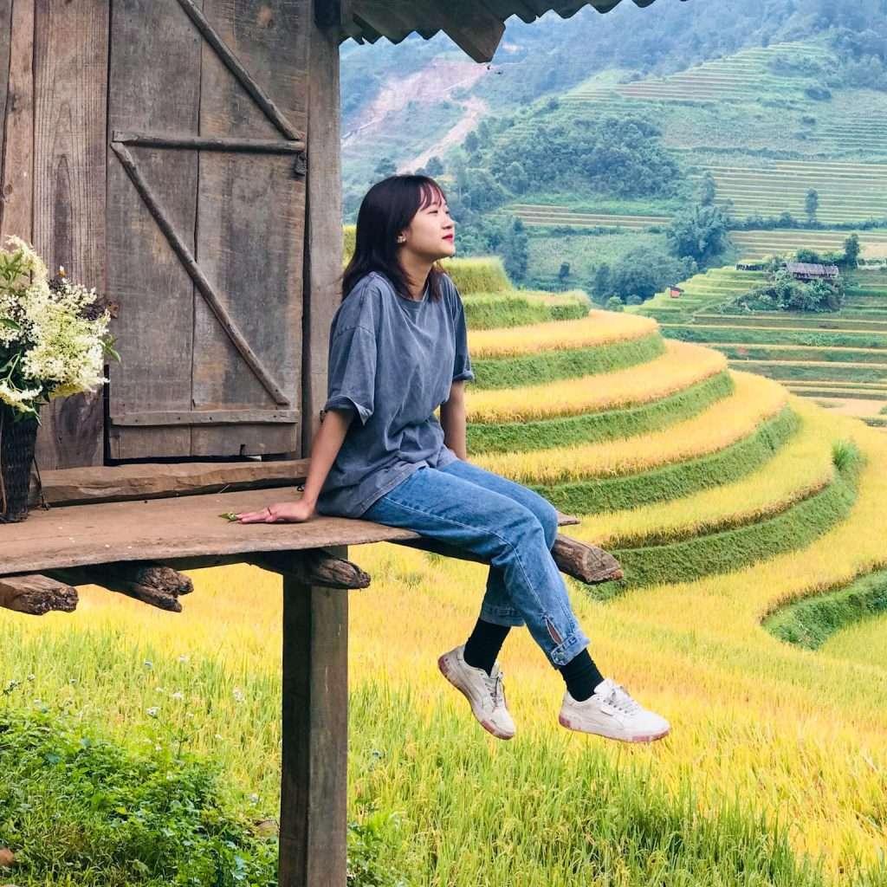
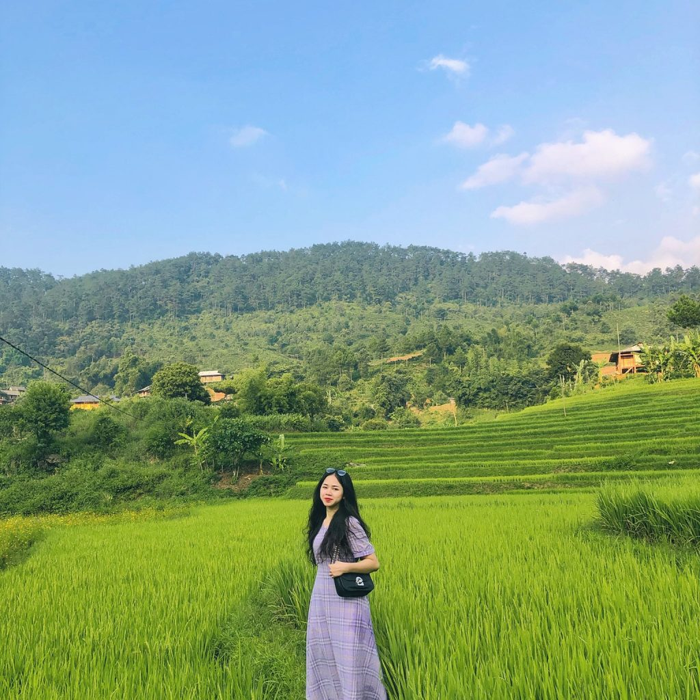
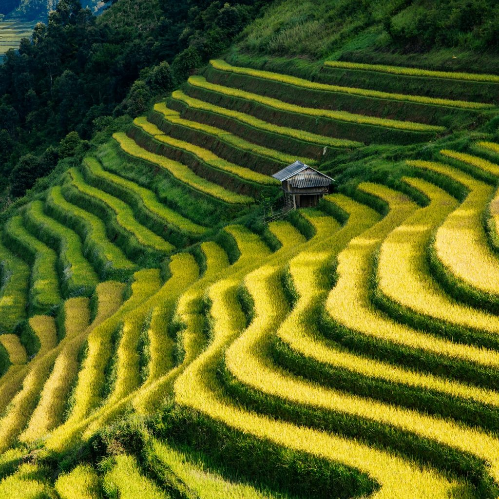
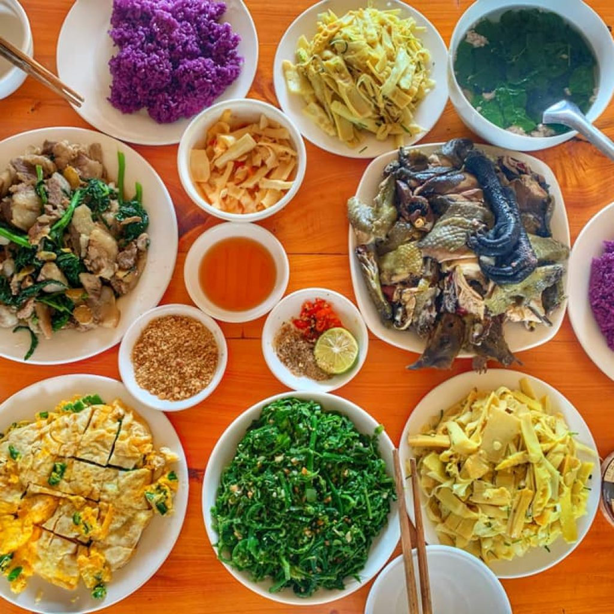

August 18, 2020 Thời gian :
Mù Cang Chải nằm ở đâu?
Mù Cang Chải là một huyện vùng sâu vùng xa thuộc tỉnh Yên Bái. Địa điểm này được mệnh danh là trái tim của Tây Bắc. Các điểm dành cho khách du lịch nổi tiếng đẹp về cảnh, tiện nghi về chỗ ở và ăn uống nằm ở thị trấn MCC, Cao Phạ, đèo Khau Phạ, Ngã Ba Kim, La Pán Tẩn, Chế Cu Nha, Dế Xu Phình.
Làm sao để đến được Mù Cang Chải?
Có hai cách để di chuyển đến MCC. Cách thứ nhất là bạn đi bằng xe khách từ Hà Nội. Bạn có thể đón xe ở bến xe Mỹ Đình. Cách thứ hai là di chuyển bằng xe riêng.
Đến Mù Cang Chải thì ở đâu?
Có khá nhiều sự lựa chọn cho bạn khi đến MCC, nhưng chủ yếu là các khách sạn bình dân, homestay kiểu phòng trọ, nhà sàn. Giá tùy theo chỗ mà mình thuê, các bạn cứ hỏi trước khi ở nhé. Một vài địa chỉ mà bạn có thể ghé qua đó là: Hello Mu Cang Chai homestay, Mu Cang Chai ecolodge, nhà nghỉ Ngủ, Kiên Pành homestay, Quân Pỏm homestay…
Nên ghé qua những địa điểm nào ở Mù Cang Chải?
Những địa điểm nổi tiếng khi đến Mù Cang Chải rất nhiều. Địa điểm đầu tiên đó là cánh đồng Mường Lò nằm tại thị xã Nghĩa Lộ. Đây là cánh đồng lúa lớn thứ hai của Tây Bắc, đẹp hút hồn mỗi khi mùa lúa chín đến. Thứ hai là thung lũng Tú Lệ, một nơi được mọi người kháo nhau rằng đẹp đến rụng tim. Là nơi người Thái Đen sinh sống và chiếm đa số. Cực kỳ bản sắc và vẫn giữ được thói quen Tắm tiên bên suối. Một điểm đến tiếp theo mà bạn không thể bỏ qua là thung lũng Cao Phạ , Lìm Mông Lìm Thái, nơi có những bản làng người Thái bình yên và xinh đẹp nhất Việt Nam. Cuối cùng, một trong tứ đại đỉnh đèo của Việt Nam là đèo Khau Phạ.
Ngoài những địa điểm mà chúng mình gợi ý ở trên, bạn cũng có thể khám phá thêm ruộng bậc thang La Pán Tẩn, thác Pú Nhu, mâm xôi lớn, mâm xôi nhỏ, đồi móng ngựa,…
Có món gì ngon ở Mù Cang Chải?
Được ăn ngon được xem là một loại hạnh phúc. Đi du lịch mà vừa được ngắm cảnh đẹp, khám phá địa điểm mới lại được ăn ngon thì không còn gì bằng đúng không nào? Ở MCC có nhiều món đặc sản mà bạn có thể thử qua. Có thể kể đến các món ăn chế biến từ gà đen, lợn bản, nếp nương hay cá suối. Bạn có thể ghé đến nhà hàng Cơm Mường Lò Hưng Vân tại thị xã Nghĩa Lộ, nhà hàng nằm đối diện khách sạn miền Tây trên đường Điện Biên.
MCC là nơi rất đáng để trải nghiệm. Đến đây, bạn có thể quên đi những bộn bề, gấp gáp của thành thị. Chỉ cần hít một hơi thật sâu là bạn đã cảm nhận được không khí trong lành, bình yên khác với cuộc sống thường ngày. Chắc chắn rằng, đây sẽ là một địa điểm hứa hẹn mang lại cho bạn nhiều cảm xúc đáng nhớ. Tuổi trẻ ngắn lắm, xách balo lên và đi thôi.